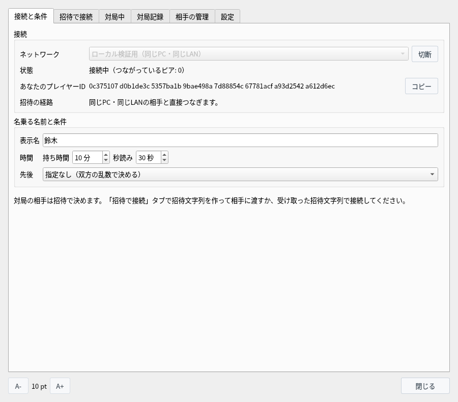
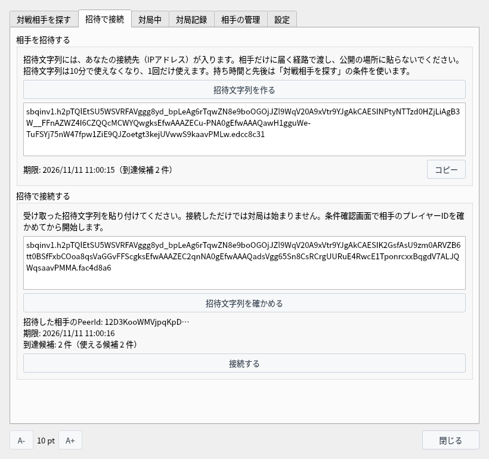

協力ノードなしで対局する
P2P対局（実験版）で、同じPC・同じLANの相手と、招待文字列だけでつないで指します
P2P対局の準備（プレイヤー鍵・表示名）・画面・対局記録はP2P対局（実験版）にあります。インターネット越しの相手とは協力ノードを使って対局するをご覧ください。
協力ノードなしで指せる相手
「ローカル検証用（同じPC・同じLAN）」のネットワークでは、協力ノードも「設定」タブの変更も要りません
「ネットワーク」を「ローカル検証用（同じPC・同じLAN）」にして接続すると、招待文字列に、このPCのLANの中のアドレス（192.168.… など）と、同じPCの中だけで使うアドレスが入ります。相手のPCからこのアドレスへそのまま届くので、間を取り持つ協力ノードは要りません。
| 相手 | つながるか |
|---|---|
| 同じPCで動かしている、もう1つのアプリ | つながります（同じPCで試す） |
| 同じLAN（家庭や職場の、同じルーターの下のネットワーク）にある別のPC | つながります（同じLANの別のPCと対局する） |
| インターネット上の相手（別の家・携帯電話の回線など） | つながりません。協力ノードを使って対局するをご覧ください |
このネットワークでは、接続元が同じPCかLANの中のアドレスの接続だけを受け付けます。インターネットから届いた接続は受け付けません。
- 「接続候補」：空のままでかまいません。
- 「直接接続を使わない」：チェックを外しておきます。付けると、LANの中の直接の接続も使わなくなるので、つながりません（「招待の経路」に「中継を使えません。…」と出ます）。
- 相手に見えるアドレス：LANの中のアドレスだけです。インターネット上の IP アドレスは相手に渡りません。
- 使用期限：ありません。ビルドから180日を過ぎても使えます（期限があるのは「限定試験用」だけです）。
対局までの手順
2人とも「ローカル検証用」で接続し、片方が作った招待文字列を、もう片方が貼り付けます
「対局」→「P2P対局（実験版）…」でウィンドウを開きます。初めてのときは、プレイヤー鍵を作り、表示名を入れます（準備）。
「接続と条件」タブで「ネットワーク」を「ローカル検証用（同じPC・同じLAN）」にして「接続」を押します。「状態」が「接続中（つながっているピア: 0）」になり、「招待の経路」に「同じPC・同じLANの相手と直接つなぎます。」と出れば準備できています（相手とつながるまで、ピアは 0 のままです）。


「ローカル検証用（同じPC・同じLAN）」で接続したところ
招待する人は、先に「接続と条件」タブの「持ち時間」「秒読み」「先後」を決めます。この条件で対局します。
「招待で接続」タブの「相手を招待する」で「招待文字列を作る」を押し、「コピー」でコピーして、メッセージなど相手だけに届く方法で渡します。欄の下に期限と到達候補の数が出ます。招待文字列は10分で使えなくなるので、作ったらすぐに渡します。
招待された人は、「招待で接続」タブの「招待で接続する」の欄に招待文字列を貼り付けて、「招待文字列を確かめる」を押します。招待した相手の PeerId・期限・到達候補の数が出たら、「接続する」を押します。
招待された人は、持ち時間などの条件を決めなくてかまいません（招待した人の条件で対局します）。「表示名」だけは入れておきます。


上：招待する人が招待文字列を作ったところ 下：招待された人が確かめたところ
招待できる人数と回数
対局は2人で1局ずつです。招待文字列は、相手1人に1つずつ作ります
- 1人だけ：1つの招待文字列でつなげるのは1人だけです。相手がつないだ時点で、その招待文字列は使えなくなります。
- 10分で期限切れ：使わなくても、作ってから10分で使えなくなります（貼り付けた人には「招待文字列の期限が過ぎています。」と出ます）。
- 対局は1対1：3人以上で1局を指す仕組みや、ほかの人が観戦する仕組みはありません。
- 続けてもう1局：対局が終わると接続を閉じます。同じ相手ともう1局指すときは、新しい招待文字列を作って渡します。
- 同時に4つまで：招待文字列は、何人かに1つずつ作って渡せます。同時に有効にできるのは4つまでで、5つ目を作ると、いちばん古いものが使えなくなります。
- 1つのアプリで指せるのは一度に1局：最初につないできた人と条件の確認に進みます。その間と対局中は、ほかの人はつなげません（条件の確認中なら「相手は今、ほかの相手と交渉中か対局中です。」と出ます）。つなげなかった人には、対局が終わってから新しい招待文字列を渡してください。8人で4局を同時に指すときは、組ごとに片方が相手を招待します（対局は1対1、1つのアプリで一度に1局）。
- 対局の後も使える：対局が終わった後も、期限内でまだ使われていない招待文字列は使えます。
- 条件は最後に作ったときのもの：有効な招待文字列は、どれも、最後に「招待文字列を作る」を押したときの表示名・持ち時間・秒読み・先後で対局します。条件を変えたいときは、変えてから作り直します。
- まとめて取り消す：「接続と条件」タブで「切断」を押すと、有効な招待文字列をすべて使えなくします。
招待するのは2人のどちらでもかまいません。持ち時間と先後は、招待した人の条件になります。招待された人は、招待文字列を作る必要はありません。自分で作った招待文字列は、自分では使えません（「自分が作った招待文字列です。」と出ます）。
同じLANの別のPCとつながらないときは、招待する人を入れ替えると、つながることがあります。接続を待つのは招待した人のPCなので、そのPCのファイアウォールが関わるためです（次の節）。
同じLANの別のPCと対局する
招待した人のPCは、TCP と UDP の 48210 番ポートで接続を待ちます
招待した人のPCは、TCP と UDP の 48210 番ポートで、相手からの接続を待ちます（同じPCで2つ目のアプリを動かすと、2つ目は空いているポートを使います）。PCのファイアウォールがこのポートへの接続を止めていると、相手には「相手に接続できませんでした。」と出ます。
firewalld なら、次のコマンドで再起動まで許可できます。
$ sudo firewall-cmd --add-port=48210/tcp --add-port=48210/udpufw なら sudo ufw allow 48210 で許可できます（要らなくなったら sudo ufw delete allow 48210）。アプリは接続元がLANの中のアドレスの接続だけを受け付けるので、ポートを開けても、インターネットから届いた接続は断ります。
| 出る文・状態 | 確かめること |
|---|---|
| 「別のネットワークの招待文字列です。」 | 2人の「ネットワーク」が違います。2人とも「ローカル検証用（同じPC・同じLAN）」で接続し直し、招待文字列を作り直します。 |
| 「招待文字列の期限が過ぎています。」 | 作ってから10分たちました。招待文字列を作り直します。 |
| 「相手に接続できませんでした。」 | 招待した人のPCのファイアウォールを確かめます（上の1）。招待する人を入れ替えると、つながることもあります。 |
| 「招待の経路」に「中継を使えません。…」 | 「設定」タブの「直接接続を使わない」のチェックを外し、切断してから接続し直します。 |
| 「相手は今、ほかの相手と交渉中か対局中です。」 | 相手がほかの人と条件の確認中か対局中です。終わってから、新しい招待文字列をもらいます。 |
| ゲスト用の Wi-Fi など | つないだ機器どうしの通信を止めているネットワークでは、同じLANでもつながりません。 |
同じPCで試す
このアプリを同じPCでいくつか起動すると、1台で対局を試せます
このアプリを同じPCでいくつか起動して、それぞれで「P2P対局」を開くと、2つ目は自動で「2人目」、3つ目は「3人目」として開きます（同時に8つまで）。何人目かは、ウィンドウの題名と上の案内に出ます。アプリを1つだけ起動しているときは、いつも1人目です。
プレイヤー鍵（プレイヤーID）・表示名・対局記録・相手の一覧は、何人目かごとに別に保存します。両方とも「ローカル検証用（同じPC・同じLAN）」で接続し、片方で作った招待文字列をもう片方に貼り付ければ、協力ノードなしで対局できます。同じPCの中の接続なので、ふつうはファイアウォールの設定も要りません。